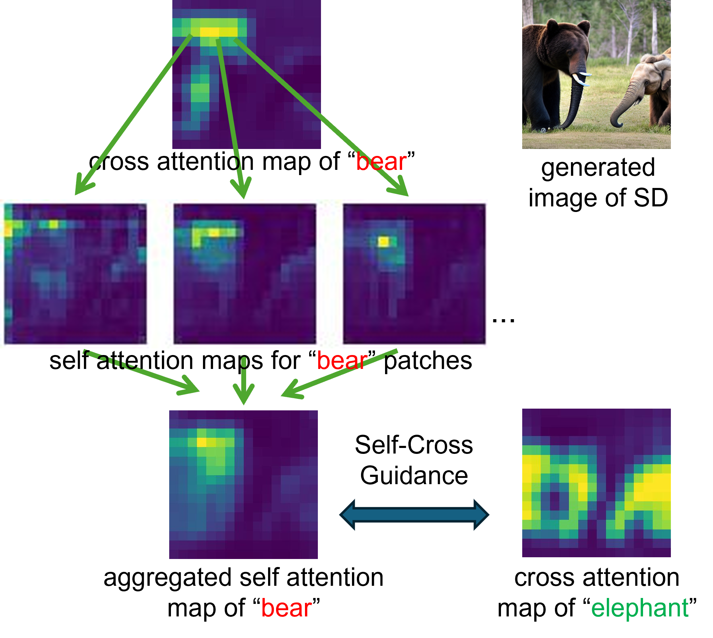

Subject mixing is a known and unresolved issue for diffusion-based image synthesis, particularly for
synthesizing multiple similar-looking subjects. We propose Self-Cross Diffusion Guidance to penalize
the overlap between cross-attention maps and aggregated self-attention maps. Compared to previous methods
based on self-attention or cross-attention alone, our guidance is more effective in eliminating subject
mixing.
What’s more, our guidance addresses mixing for all relevant patches of a subject beyond the most
discriminant one, e.g., the beak of a bird. We aggregate self-attention maps of automatically selected
patches for a subject to form a region that the whole subject attends to.
Our guidance is training-free
and can boost the performance of both Unet-based and transformer-based diffusion models such as the Stable
Diffusion series. We also release a more challenging benchmark with prompts of similar-looking subjects
and utilize GPT-4o for automatic and reliable evaluation. Extensive qualitative and quantitative results
demonstrate the effectiveness of our Self-Cross Diffusion Guidance.
For example “a bear and an elephant”. the image below describes the aggregation of self-attention maps.
Given the cross-attention map of “bear”, we select patches with high responses and visualize their
self-attention maps. With our assumption that, at some time steps and layers, a subject should not
attend to other subjects in the image, we propose to penalize the overlap between the aggregated
self-attention map and cross-attention maps of other subjects.
